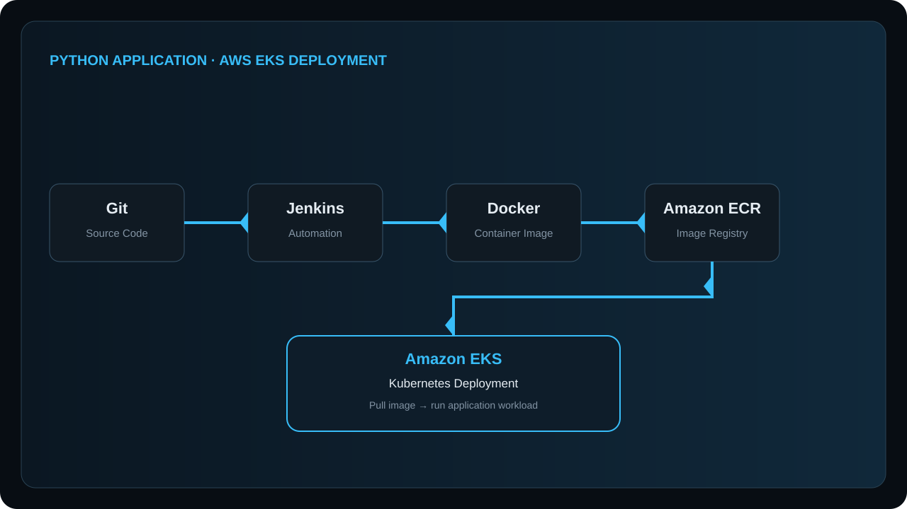
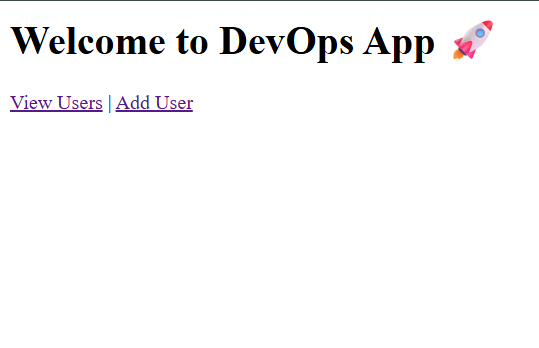
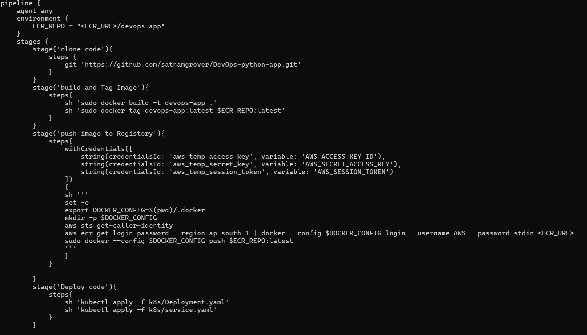
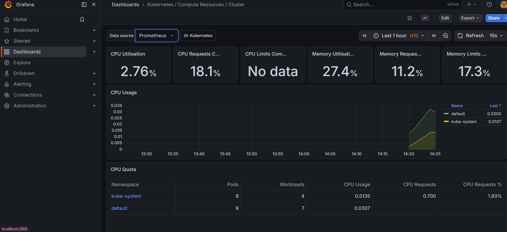
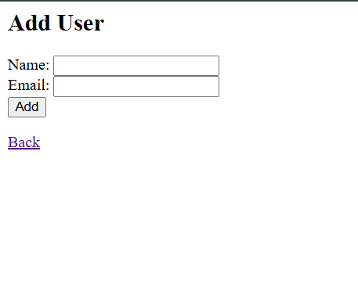

PROJECT 03 · AWS CLOUD DEPLOYMENT
Python Application Deployment on AWS EKS
A cloud deployment project covering Docker containerization, Jenkins automation, Amazon ECR image publishing, and Kubernetes deployment on Amazon EKS.

PROJECT OVERVIEW
Moving a containerized Python app into AWS.
The application was containerized with Docker for cloud deployment. A Jenkins pipeline was built to automate Docker image creation and deployment steps.
The resulting container image was pushed to Amazon ECR and the application was deployed on Amazon EKS, providing practical experience with AWS container registry, Kubernetes deployments, and cloud infrastructure.
CLOUD WORKFLOW
Docker → ECR → EKS
Source
Python application source is version controlled.
Jenkins
Pipeline automates image creation steps.
Docker
Application is packaged into a container image.
ECR
Image is pushed to Amazon Elastic Container Registry.
EKS
Application is deployed on Amazon Elastic Kubernetes Service.
REAL PROJECT SCREENSHOTS
Real screenshots showcasing the application, deployment workflow, and infrastructure used in this project.




SKILLS DEMONSTRATED
What this project shows.
Docker-based containerization for cloud deployment.
Jenkins pipeline automation for build and deployment steps.
Amazon ECR image publishing and management.
Amazon EKS Kubernetes application deployment.
Practical AWS cloud infrastructure experience.
Previous project.
← Deployed Full Stack Chat Application